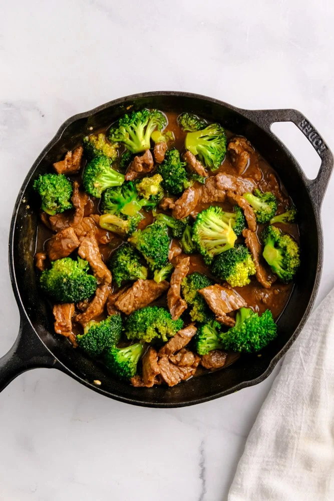

Beef and Broccoli

Description
We all love Chinese takeout. So bring the takeout home to you with this easy and delicious
recipe for Beef and Broccoli. It is a one pan recipe that's simple and doesn't break the bank.
Ingredients
For the meat
- 1 pound London broil steak (thinly sliced in small strips)
- 2 tablespoons of olive oil
- 1 pound of broccoli cut into florets
- 2 teaspoons sesame seeds for garnish
For the sauce
- 1/2 cup hot water
- 6 tablespoons low sodium soy sauce
- 2 tablespoons sesame oil
- 2 tablespoons packed light brown sugar
- 1 1/2 tablespoons corn starch
- 4 cloves garlic minced
- 2 teaspoons ginger paste or fresh ginger, grated
- 1/2teaspoons black pepper
Steps